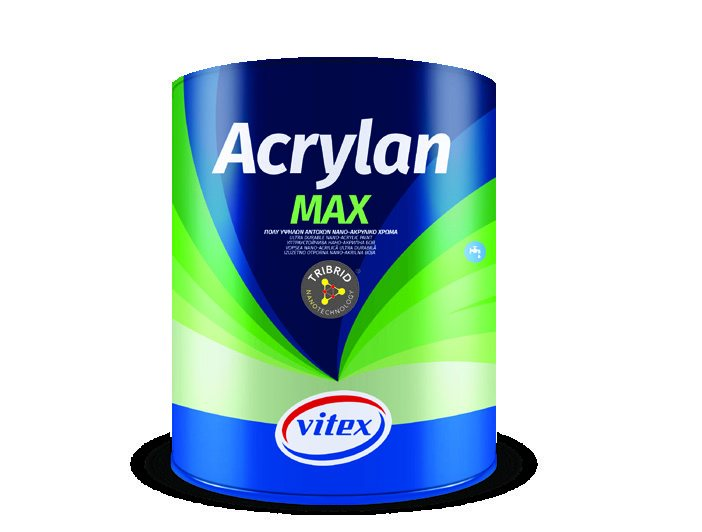

Нано-акриловая · матовая
Acrylan MAX
Инновационная акриловая матовая нано-краска высокой прочности с длительным сроком службы. Стойкость к выгоранию и загрязнению, водоотталкивание и паропроницаемость во влажном климате.
- Расход 13–17 м²/л
- Сушка 30–60 мин
- Разбавление 0–10%
- Фасовка 0,75–10 л